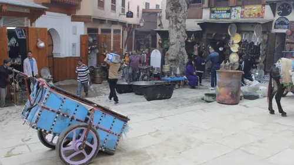
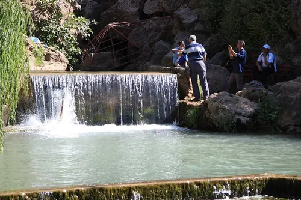
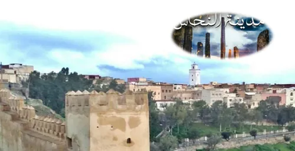

تاريخ وثقافة
المدينة القديمة
ابدأ صباحك بجولة في أزقة المدينة القديمة واكتشف الأبواب التاريخية والحياة المحلية.
معرفة المزيد
تجربة صباحية
اكتشف أجمل الأماكن التي يمكن زيارتها في الصباح داخل تازة، حيث تكون الأجواء هادئة ومناسبة للمشي والتصوير.
لماذا الصباح؟
الصباح هو الوقت المثالي لاكتشاف تازة بهدوء، بعيداً عن الازدحام وحرارة النهار. يمكن للزائر الاستمتاع بالمدينة القديمة، المناظر الطبيعية، والمقاهي المحلية في أجواء مريحة.
اقتراحات صباحية

تاريخ وثقافة
ابدأ صباحك بجولة في أزقة المدينة القديمة واكتشف الأبواب التاريخية والحياة المحلية.
معرفة المزيد

مناظر وتصوير
استمتع بمشاهدة المدينة من الأعلى والتقاط صور جميلة في بداية اليوم.
معرفة المزيدنصائح عملية
• يُفضّل الخروج في الصباح الباكر.
• احمل ماءً وكاميرا أو هاتفاً للتصوير.
• اختر ملابس مريحة للمشي.
• تجنب أوقات الحر في فصل الصيف.